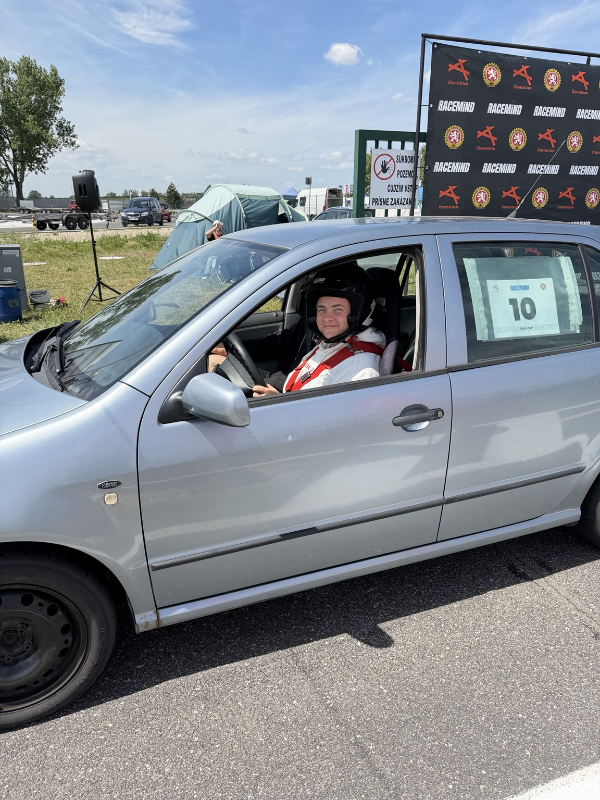
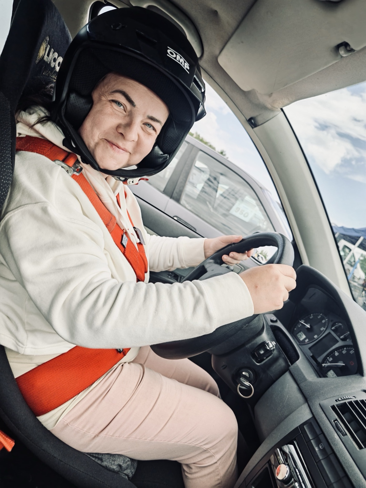
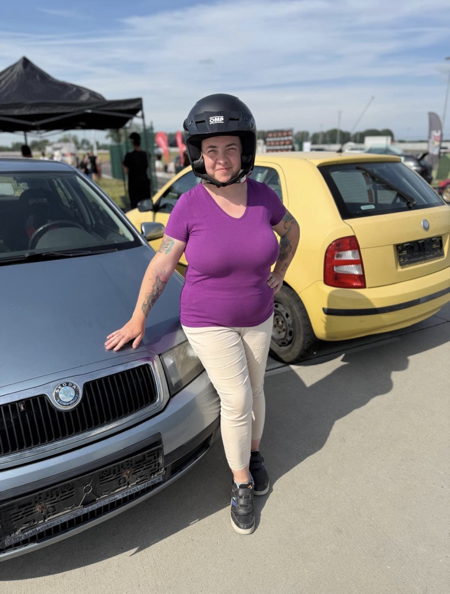

Pre jednotlivcov
Donio
Crowdfundingová kampaň pre jednotlivcov so zaujímavými odmenami. Vyberte si odmenu podľa svojho gusta a staňte sa súčasťou príbehu.
Chcem vedieť o spusteníProjekt 100 kôl / Ročný jazdecký development
Môže sa žena, ktorá získala vodičák v 38 rokoch a o deväť mesiacov neskôr stála na štarte prvých pretekov, systematickým tréningom dostať na profesionálnu úroveň? Počas jedného roka to otestujem na sebe.
Donio spúšťam 6. októbra 2026.

Prečo
V amatérskom motoršporte nie je systematický tréning jazdca samozrejmosťou.
Mnohí získavajú skúsenosti od rodičov alebo skúsenejších jazdcov, iní sa učia najmä metódou pokus/omyl. Samotné preteky sa tak stávajú tréningovým laboratóriom aj skúškou toho, čo sa jazdec dovtedy naučil.
Takýto spôsob dokáže jazdca posúvať, no často pomaly a nekonzistentne. Roky môže opakovať rovnaké chyby bez toho, aby presne vedel, kde stráca čas, čo má zmeniť a ako svoj výkon zopakovať. Napredovanie sa môže zastaviť nie preto, že už nemá potenciál, ale preto, že mu chýba systém, spätná väzba a jasný ďalší krok.
Práve z tejto otázky vznikol Projekt 100 kôl: Existuje spôsob, ako sa stať konzistentne výkonným jazdcom rýchlejšie a systematickejšie?
Dôkaz
Projekt 100 kôl túto hypotézu otestuje na jednej konkrétnej jazdkyni: na mne.
Počas dvanástich mesiacov budem cielene pracovať na technike jazdy, práci s dátami, fyzickej kondícii a mentálnej príprave. Cieľom nie je iba jazdiť viac alebo byť rýchlejšia v jedných pretekoch.
Cieľom je, aby som pod dohľadom profesionálneho trénera prešla systematickým jazdeckým developmentom a stala sa technicky dobrou, vedomou a konzistentne výkonnou pretekárkou. Postupne sa chcem posunúť od autoslalomu cez preteky do vrchu až k vytrvalostným pretekom na okruhoch.
Popri tom chcem vybudovať vlastný motoršportový ekosystém, ktorý nebude stáť len na mojom jazdení.
Aby bolo možné na konci posúdiť, kam som sa za ten rok dostala, treba najprv presne vedieť, odkiaľ štartujem.
Zvedavosť
Celý môj príbeh vlastne nie je o mne, ale o zvedavosti. Na jeho začiatku som bola ja, Karolína Gregor, žena, ktorá si myslela, že sa bojí šoférovať, a podľa toho sa riadila celý život. Až o dvadsať rokov neskôr, než si ľudia bežne robia vodičák, vo mne zvíťazil malý hlások, ktorý sa pýtal: Čo sa stane, ak urobíš len jeden malý krok?
Tak som si na prahu štyridsiatky spravila vodičák. Strach sa odmietal vzdať, preto to bolo veľmi náročné obdobie. Naučila som sa však dôležitú vec. Môžeme pokračovať, aj keď sa bojíme. Stačí nechať zvedavosť povedať: OK, teraz je to hrozné. A čo bude ďalej?
Preto som už deväť mesiacov po získaní vodičáku stála na štarte svojich prvých pretekov. Zvedavosť sa zase pýtala: A čo sa stane, keď skúsime aj toto? Dnes mám za sebou prvú sezónu v autoslalome a viem, čo sa stane, keď dá človek šancu svojmu detskému snu. Už to nie je len sen. Sú to reálne výsledky, skúsenosti, komunita podobných ľudí a viera v seba.
Preto sa zvedavosť znova pýta: Dá sa dostať na profesionálnu úroveň, aj keď za sebou nemám rodinu v motoršporte, jazdecký vývoj od detstva ani kariéru v motokárach a začínam neskoro? Dá sa vybudovať ekosystém, ktorý dokáže priviesť k motoršportu ďalších ľudí? A môže to celé fungovať dlhodobo?
Rovnaké autá. Rozhoduje jazdec.
V sezóne 2026 pretekám vo Fabia Cupe, arrive & drive šampionáte, ktorý sa jazdí spoločne s Pohárom ČSautoslalom.
V tejto triede si jazdec neprinesie vlastné pretekárske auto. Všetci sa striedame na dvoch rovnakých sériových vozidlách Škoda Fabia 1.4 s výkonom 50 kW. Jazdíme na rovnakých pneumatikách a za rovnakých podmienok.
Nerozhoduje teda, kto má výkonnejšie auto alebo väčší rozpočet. Rozhoduje práca jazdca: presnosť, čítanie trate, technika, konzistentnosť a schopnosť zvládnuť tlak.
Deväť mesiacov po získaní vodičáku som stála na štarte svojich prvých pretekov. Dnes mám za sebou viac ako 10 pretekárskych štartov a v Písku som získala 3. miesto v triede Fabia Cup.




Dvanásť mesiacov
Projekt 100 kôl nie je plán jednoducho jazdiť viac. Je to dvanásťmesačný jazdecký development pod vedením profesionálneho okruhového trénera.
Autoslalom ani preteky do vrchu nie sú disciplíny, ktorým sa bežne venuje. Cieľom programu však nie je naučiť ma jednu konkrétnu trať alebo jeden typ pretekov. Budeme rozvíjať všeobecné jazdecké techniky a návyky, ktoré sa dajú prenášať naprieč rôznymi disciplínami motoršportu.
Cieľom je vybudovať technicky dobrú, vedomú a konzistentne výkonnú pretekárku. Nie iba zajazdiť jeden rýchly výsledok.
Doteraz
Dve možnosti
Odmeny za podporu
Na Doniu nebude čakať len tlačidlo Prispieť. Za podporu si môžete vybrať odmeny, ktoré majú hodnotu aj po skončení kampane.
Oblečenie, šiltovky a hrnčeky vznikli v spolupráci s etablovanou značkou Kura Harabura. Motoršportové odmeny pripravujem s organizátorom ČeskoSlovenského autoslalomu.
Niektoré odmeny si oblečiete alebo položíte na stôl. Iné vás dostanú priamo k pretekárskemu autu a na trať.
Všetky odmeny sú limitované. Keď sa vypredajú, ďalšie kusy ani termíny už nebudú.
Chcem vedieť o spusteníPre firmy
Partnerstvo nezačne a neskončí jedným logom. Po skončení kampane si vyberiete konkrétny mesiac ročného jazdeckého developmentu, ktorý bude patriť vašej značke.
Počas vybraného mesiaca získate status Partner mesiaca Projektu 100 kôl a komunikáciu naviazanú na reálne tréningy a preteky.
Vaša značka nebude iba menom v zozname partnerov. Dostane vlastný priestor v konkrétnej etape príbehu.
Dvojnásobná sila
REV Matching partner dorovnáva príspevky ľudí v pomere 1 : 1 až do vopred dohodnutej sumy. Keď ľudia prispejú 20 €, partner pridá ďalších 20 €. Každý príspevok tak získa dvojnásobnú silu.
Na rozdiel od Partnera mesiaca sa toto partnerstvo aktivuje okamžite počas Donio kampane. Partner je priebežne uvádzaný v stories aj príspevkoch priamo vo chvíli, keď dorovnáva podporu ľudí.
Firma tak nečaká na začiatok ročného programu. Stáva sa viditeľnou súčasťou kampane a pomáha jej rásť práve v čase, keď to potrebuje najviac.
Chcem sa stať REV Matching partnerom* Rev matching je technika pri podraďovaní, pri ktorej vodič krátkym medziplynom dorovná otáčky motora otáčkam potrebným pre nižší prevodový stupeň. Výsledkom je plynulejšie preradenie a stabilnejšie auto.
Pre redakcie
Projekt 100 kôl je otvorený médiám, ktoré chcú sledovať, čo sa stane, keď žena bez motoršportového zázemia začne v 38 rokoch a rozhodne sa prejsť ročným systematickým jazdeckým developmentom.
Ak chcete o projekte napísať, urobiť rozhovor alebo sledovať jeho vývoj počas roka, napíšte mi. Základné informácie, fotografie, výsledky a ďalšie podklady vám pošlem priamo.
Kontakt pre médiáĎalší krok
Nemôžete prispieť? Pošlite projekt človeku alebo firme, ktorých by mohol zaujať.
Pred spustením
Donio spúšťame 6. októbra 2026.
Oznámenie spustenia Donia, mesačné aktualizácie a informácie o pokračovaní projektu.